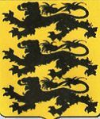

1046534337534 Pfaltzgreve Berthold II von Diessen
Pfaltzgreve av Diessen. Blev ca 60 år.

Född:
omkring 1000 Diessen, Tyskland. [1]
Död:
omkring 1060 Oberbayern, Tyskland. [1]
Barn:
Personhistoria
1000?
Födelse omkring 1000 Diessen, Tyskland
[1]
1060?
Död omkring 1060 Oberbayern, Tyskland
[1]
Källor